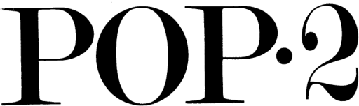

An ALGOL for your cat.
The syntax of POP-2 is ALGOL-like, assignments are in the infix notation, but the language design is deeply concatenative:
foo := 123; ( In Pascal )
123 -> foo; ( In POP-2 )
The language has the explicit notion of an operand stack. Thus, the prior assignment can be written as two separate statements where the first one leaves a value on the stack, and the second, consumes it:
123; -> foo;

Interpreter
The language can easily be compiled to Uxntal, in fact, the language is so elegant and small that an entire compiler is less than 800 lines and fits within 3kb of memory.
At first glance, the language looks a little like Pascal. A statement begins with a keyword, followed by expressions, terminated by a semi-colon. Evaluation consists of moving through the program leaving values on the stack as needed.
Vars
Memory can be allocated using the vars statement and read with the {} synthax. A variable can any length:
comment The variable foo is 10 bytes: vars foo:10; comment The variable foo is 7 bytes, initialized to "abc def": vars bar:"abc def"; comment Write 0x1234 in cells overlapping two variables: vars hb:1 lb:2; 0x1234 -> hb;
If/Then/Elseif/Else
At first glance, the language looks awfully unsurprising, but notice how each case pushes a value on the stack instead of doing an assignment:
vars x; 4 -> x; if x > 4; then 1; elseif x = 4; then 2; else 3; close
2
Function
Functions are declared in the typical ALGOL fashion, recursion simply leaves the arguments on the stack:
function factRec n; if n = 0; then 1; else n * factRec(n-1); close end
Because of the stack-based paradigm, there is no need to distinguish between statements and expressions. These two statements are equal:
f(x, y, z); x, y, z; f();
Labels
Loops are written with GOTOs, making it possible to loop without dirtying the stack with iterators.
comment Loop for 10 times; vars i; loop: if i < 10; then i + 1 -> i, goto loop; close i;
10
I/O
The host system being Varvara, this implementation deviates a bit from the original POP-2, that used the big arrow(=>) without a destination, this will use this Console port number(0x17, 0x18) to output the ASCII letter "H":
0x48 => 23; Outputs: H
Putting it all together, we can make a string printing function:
function printString s;
vars c:1 cells:2 i; 0 -> i;
loop:
{s+i} -> cells;
if c;
then c => 23, i + 1 -> i, goto loop;
close
end
vars text:"Hello World!\n";
printString(#text);
- Source, Uxntal.
- Repository, Uxntal.
incoming: 2026